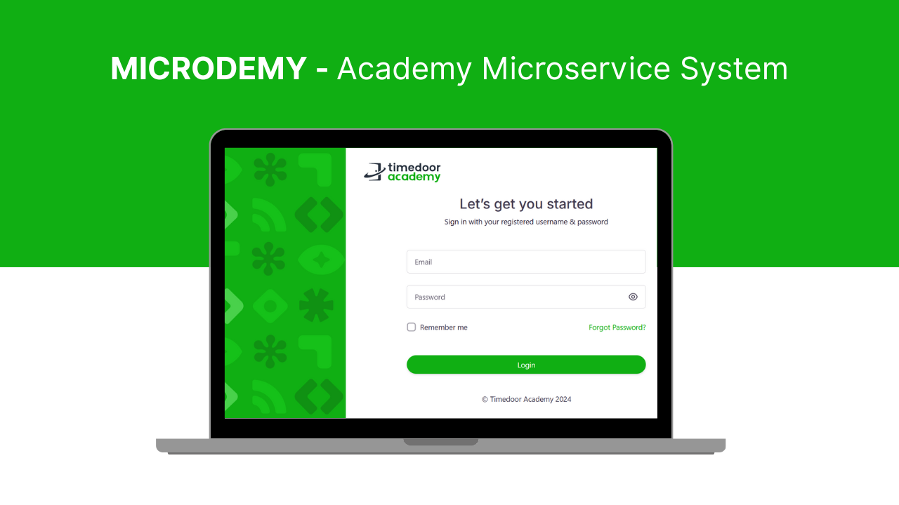

portfolio
My work as QA

web design

wordpress

photography

web-design

wordpress

I have experience as a team member, mentoring internships, and develop QA team in testing platforms
See my updated CV
As a QA, I have strong understanding in SDLC (System Development Life Cycle) and do risk analysis and mitigate quality issues before product release. also give feedback to designers and PM about UX issues.
As a tester, I have experience both manual and automated testing. I can develop automated test cases using Cypress, Playwright, Postman, Jmeter and K6 Willing to contribute my experience to the QA field.
Currently focusing on career development as SDET and applying it to Timedoor company, by collaborating through my team and actively looking for relevant courses.
Developing comprehensive automated test suites using modern tools like Cypress, Playwright, and Selenium. Ensuring faster feedback loops and consistent test execution across different environments.
Conducting load, stress, and performance testing using JMeter and K6 to ensure applications can handle expected user loads and identify performance bottlenecks before production release.
Performing thorough manual testing including functional, usability, and exploratory testing. Creating detailed test cases and documenting bugs with clear reproduction steps and severity levels.
Writing maintainable and scalable automation scripts with proper coding standards, clear documentation, and reusable components for efficient test maintenance and collaboration.
Comprehensive API testing using Postman and automated tools to validate endpoints, data integrity, response times, and error handling across different scenarios and environments.
Conducting thorough root cause analysis of quality issues, collaborating with development teams to identify solutions, and implementing preventive measures to avoid similar problems in the future.
+6287761334020
bachtiarahmad6969@gmail.com
@nanatcii